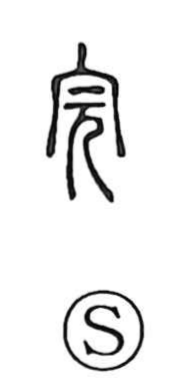

Explanation
完 combines 宀, an ancestral shrine, with 元, a person whose head is enlarged and emphasized. The rite is the report made before the ancestors after returning from war victorious and alive. The intact person stands beneath the sacred roof.
The undertaking has been carried through without loss of life. This gives being whole, fulfilling something, and bringing it safely to completion. The same head-centred ritual setting appears in 冠, where the hair is arranged at coming of age.
From bodily soundness come preserving or guarding something intact. 完 can also describe confinement that leaves the body unmutilated. Its ordinary complete and finished retain both sides of the rite: the task has reached its end, and the person or thing has remained whole.